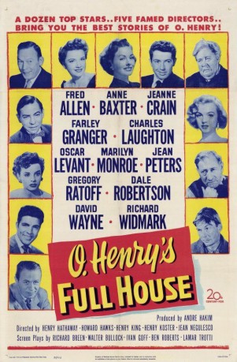
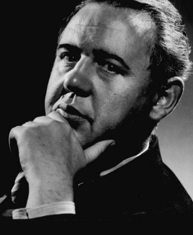

#7903 Fünf Perlen
Alternativ: O. Henry's Full House
 
 IMDB-Wertung: 7.3 / 10
IMDB-Wertung: 7.3 / 10  Metascore: 0
Metascore: 0 
"O. Henry's Full House" is a film divided in five segments telling five tales in the beginning of the Twentieth Century. 1) "The Cop and the Anthem": the winter is coming and the homeless drifter Soapy wants to go to jail for three months to get shelter and food. His partner Horace suggests they look for shelter with the Salvation Army, but Soapy refuses. He forces many situations to be arrested but he is always forgiven. When he goes to the church, there is a miracle and Soapy decides to seek a job position. Will he succeed? 2) "The Clarion Call": when a thief kills a man, the police investigators do not have any lead to follow. Police Sergeant Barney Woods sees a pen that was found in the crime scene and he seeks out a man called Johnny Kernan. He finds Johnny that invites Barney to drink with him and they go to his hotel room. Johnny recalls their youth, when they were friends but Barney tells that he must arrest him since he recognized the pen that belonged to Johnny. However the ...
Jahr: 1952
Dauer: 117 Minuten
FSK: 12
Land: USA Studio: 20th Century FoxTonspuren: DTS - ,
Untertitel:
Auflösung: 1080p (1440x1080) Größe: 13721 MB
Genre: Drama
Regisseur: Henry Hathaway, Howard Hawks, Henry King, Henry Koster, Jean Negulesco
Drehbuch: Lamar Trotti
Soundtrack: Alfred Newman
Darsteller:
- Fred Allen als Sam 'Slick' Brown (segment The Ransom of Red Chief)
 Anne Baxter als Joanna Goodwin (segment The Last Leaf)
Anne Baxter als Joanna Goodwin (segment The Last Leaf)- Jeanne Crain als Della (segment The Gift of the Magi)
 Farley Granger als Jim (segment The Gift of the Magi)
Farley Granger als Jim (segment The Gift of the Magi)-  Charles Laughton als Soapy (segment The Cop and the Anthem)
- Oscar Levant als Bill Peoria (segment The Ransom of Red Chief)
 Marilyn Monroe als Streetwalker (segment The Cop and the Anthem)
Marilyn Monroe als Streetwalker (segment The Cop and the Anthem) Jean Peters als Susan Goodwin (segment The Last Leaf)
Jean Peters als Susan Goodwin (segment The Last Leaf)- Gregory Ratoff als Behrman (segment The Last Leaf)
- Dale Robertson als Barney Woods (segment The Clarion Call)
- David Wayne als Horace (segment The Cop and the Anthem)
 Richard Widmark als Johnny Kernan (segment The Clarion Call)
Richard Widmark als Johnny Kernan (segment The Clarion Call)- Joyce Mackenzie als Hazel Woods (segment The Clarion Call) (scenes deleted)
- Lee Aaker als J.B. Dorset aka Red Chief (segment The Ransom of Red Chief)
- Richard Rober als Chief of Detectives (segment The Clarion Call)
- Fred Kelsey als Mr. Schultz / Santa Claus (segment The Gift of the Magi)
 Richard Garrick als Doctor (segment The Last Leaf)
Richard Garrick als Doctor (segment The Last Leaf)- John Steinbeck als Narration By
 Irving Bacon als Ebenezer Dorset (segment The Ransom of Red Chief) (uncredited)
Irving Bacon als Ebenezer Dorset (segment The Ransom of Red Chief) (uncredited)- Warner Baxter als Cisco Kid (clip from 'The Cisco Kid' (Opening Prologue) (archive footage) (uncredited)
- Carl Betz als Jimmie Valentine - Prologue (uncredited)
 Robert Easton als Yokel (segment The Ransom of Red Chief) (uncredited)
Robert Easton als Yokel (segment The Ransom of Red Chief) (uncredited) Fritz Feld als Maurice (segment The Gift of the Magi) (uncredited)
Fritz Feld als Maurice (segment The Gift of the Magi) (uncredited) James Flavin als Cop (segment The Cop and the Anthem) (uncredited)
James Flavin als Cop (segment The Cop and the Anthem) (uncredited) Robert Foulk als Cop (segment The Cop and the Anthem) (uncredited)
Robert Foulk als Cop (segment The Cop and the Anthem) (uncredited) Kathleen Freeman als Mrs. Dorset (segment The Ransom of Red Chief) (uncredited)
Kathleen Freeman als Mrs. Dorset (segment The Ransom of Red Chief) (uncredited) Steven Geray als Boris Radolf (segment The Last Leaf) (uncredited)
Steven Geray als Boris Radolf (segment The Last Leaf) (uncredited)- Gloria Gordon als Ellie Mae (segment The Ransom of Red Chief) (uncredited)
- Harry Hayden als A.J. Crump (segment The Gift of the Magi) (uncredited)
 Jimmie Horan als Bookkeeper (segment The Gift of the Magi) (uncredited)
Jimmie Horan als Bookkeeper (segment The Gift of the Magi) (uncredited)- Richard Hylton als Bill (segment The Gift of the Magi) (uncredited)
- Frank Jaquet als Butcher (segment The Gift of the Magi) (uncredited)
 Norman Leavitt als Yokel (segment The Ransom of Red Chief) (uncredited)
Norman Leavitt als Yokel (segment The Ransom of Red Chief) (uncredited) David McMahon als Cop (The Clarion Call) (uncredited)
David McMahon als Cop (The Clarion Call) (uncredited) Frank Mills als Man Being Booked at Police Station (uncredited)
Frank Mills als Man Being Booked at Police Station (uncredited)- Ava Norring als Girl (segment The Clarion Call) (uncredited)
- House Peters als Dave Bascom (segment The Clarion Call) (uncredited)
 Stuart Randall als Detective (segment The Clarion Call) (uncredited)
Stuart Randall als Detective (segment The Clarion Call) (uncredited) Sig Ruman als Menkie (segment The Gift of the Magi) (uncredited)
Sig Ruman als Menkie (segment The Gift of the Magi) (uncredited) Hal Smith als Dandy (segment The Last Leaf) (uncredited)
Hal Smith als Dandy (segment The Last Leaf) (uncredited) Bert Stevens als Street Extra / Roominghouse Extra / Office Worker at Crump's (uncredited)
Bert Stevens als Street Extra / Roominghouse Extra / Office Worker at Crump's (uncredited) Warren Stevens als Druggist (segment The Last Leaf) (uncredited)
Warren Stevens als Druggist (segment The Last Leaf) (uncredited) Harry Tenbrook als Bar Customer (uncredited)
Harry Tenbrook als Bar Customer (uncredited)- Philip Tonge als Man with Umbrella (segment The Cop and the Anthem) (uncredited)
- Ernö Verebes als Waiter (segment The Cop and the Anthem) (uncredited)
 Herb Vigran als Poker Player (segment The Clarion Call) (uncredited)
Herb Vigran als Poker Player (segment The Clarion Call) (uncredited) Martha Wentworth als Mrs. O'Brien (segment The Last Leaf) (uncredited)
Martha Wentworth als Mrs. O'Brien (segment The Last Leaf) (uncredited) Will Wright als Manager (segment The Clarion Call) (uncredited)
Will Wright als Manager (segment The Clarion Call) (uncredited)- May Wynn als Mother - Prologue (uncredited)
- Richard Allan als Pete (segment The Gift of the Magi) (uncredited)
Datei: X:\1950-1959\Fünf Perlen (1952, FSK12, 1440x1080).mkv seit 06.01.2018
Festplatte: HD 1900-1970
 Es gibt insgesamt 141 Filme in der Gruppe '1950-1959'
Es gibt insgesamt 141 Filme in der Gruppe '1950-1959'